Patrón de CRS con dos celdas — puertos de antena, v_shift y la regla PCI mod 3
Nota complementaria a la de RSRP/RSRQ/SINR. Ejemplo concreto con dos celdas vecinas y 2 puertos de antena.
1. Corrección previa: los puertos de antena no son antenas físicas
Un puerto de antena en 3GPP es una entidad lógica, definida por su señal de referencia:
Dos señales están en el mismo puerto de antena si el canal por el que viaja una puede inferirse del canal por el que viaja la otra.
Tres consecuencias que conviene decir explícitamente en clase:
| Idea equivocada | Realidad |
|---|---|
| "El puerto 0 es una antena física del arreglo" | El puerto lógico se mapea al arreglo físico mediante una matriz de virtualización. En NR con massive MIMO es rutinario que 64 elementos físicos se mapeen a 2, 4 u 8 puertos lógicos |
| "Esas 2 antenas están asignadas a un UE" | Las CRS son cell-specific: se transmiten omnidireccionalmente a toda la celda, todo el tiempo, las use alguien o no. Todos los UEs de la celda miden exactamente las mismas CRS |
| "El beamforming se hace con las CRS" | Lo que es por UE son las DM-RS (puertos 7–14 en LTE, modos de transmisión 7–10; mecanismo principal en NR). Esas sí van precodificadas hacia un usuario. Y aun así lo correcto es hablar de capas, no de antenas |
Frase para la pizarra: las CRS son el faro del puerto, encendido para todos; las DM-RS son la linterna que apunta a un barco concreto.
2. La fórmula de posición
donde m = 0, 1 recorre las dos repeticiones dentro de un RB, y v depende del puerto
y del símbolo:
| Puerto | Símbolos 0 y 7 | Símbolos 4 y 11 |
|---|---|---|
| 0 | v = 0 | v = 3 |
| 1 | v = 3 | v = 0 |
Ese intercambio de v entre símbolos es lo que produce el escalonamiento del
patrón, y lo que lleva la densidad efectiva en frecuencia de 6 a 3 subportadoras.
Posición estática, contenido variable: las posiciones quedan fijadas por el PCI. Lo que cambia de slot a slot es el valor (secuencia pseudoaleatoria QPSK generada a partir de PCI, número de slot y número de símbolo).
3. Ejemplo: dos celdas vecinas, 2 puertos de antena

v_shift = 0) ocupa las subportadoras {0, 3, 6, 9}; celda B (PCI 13, v_shift = 1) ocupa {1, 4, 7, 10}. Ni un RE compartido: los pilotos de cada una caen sobre REs de datos de la otra.
Celda A — PCI = 12 → v_shift = 12 mod 6 = 0
k | s0 s4 s7 s11
----+--------------------
11 | · · · ·
10 | · · · ·
9 | R1 R0 R1 R0
8 | · · · ·
7 | · · · ·
6 | R0 R1 R0 R1
5 | · · · ·
4 | · · · ·
3 | R1 R0 R1 R0
2 | · · · ·
1 | · · · ·
0 | R0 R1 R0 R1
Celda B — PCI = 13 → v_shift = 13 mod 6 = 1
k | s0 s4 s7 s11
----+--------------------
11 | · · · ·
10 | R1 R0 R1 R0
9 | · · · ·
8 | · · · ·
7 | R0 R1 R0 R1
6 | · · · ·
5 | · · · ·
4 | R1 R0 R1 R0
3 | · · · ·
2 | · · · ·
1 | R0 R1 R0 R1
0 | · · · ·
R0 = CRS del puerto 0 · R1 = CRS del puerto 1 · · = PDSCH / control
Símbolos CRS: 0, 4, 7, 11 de la subtrama (símbolos 0 y 4 de cada slot, CP normal).
Resultado: la Celda A ocupa las subportadoras {0, 3, 6, 9} y la Celda B ocupa {1, 4, 7, 10}. Ni un solo RE compartido. Los pilotos de A caen sobre REs de datos de B y viceversa.
Silenciamiento: donde el puerto 0 transmite CRS, el puerto 1 está en DTX en ese mismo RE, y viceversa. Si no, el UE no podría separar los dos canales.
4. La trampa: con 2 puertos solo existen 3 patrones, no 6
Con dos puertos de antena, el conjunto de REs ocupados en un símbolo es
es decir, un patrón con período 3, no 6:
v_shift |
PCI ejemplo | REs ocupados (2 puertos) | Grupo |
|---|---|---|---|
| 0 | 12 | {0, 3, 6, 9} | 0 |
| 1 | 13 | {1, 4, 7, 10} | 1 |
| 2 | 14 | {2, 5, 8, 11} | 2 |
| 3 | 15 | {0, 3, 6, 9} | 0 ← colisiona con PCI 12 |
| 4 | 16 | {1, 4, 7, 10} | 1 |
| 5 | 17 | {2, 5, 8, 11} | 2 |
Contraejemplo para la clase
Si como vecina de la celda PCI 12 se hubiera puesto PCI 15, los v_shift serían
distintos (0 vs 3) y aun así los pilotos colisionarían por completo. Peor todavía:
el puerto 0 de la celda 12 chocaría exactamente contra el puerto 1 de la
celda 15.
Regla de planificación
Con 1 puerto de antena importa PCI mod 6. Con 2 o 4 puertos, lo que importa es PCI mod 3.
El detalle elegante
El PCI se construye como
con \(N_{ID}^{(1)} \in \{0..167\}\) obtenido del SSS y \(N_{ID}^{(2)} \in \{0,1,2\}\) obtenido del PSS. Por lo tanto:
El grupo de CRS es literalmente el índice del PSS. No es coincidencia: el diseño está pensado para que el UE, apenas detecta el PSS y antes incluso de decodificar el SSS, ya sepa en qué subportadoras buscar los pilotos.
5. Por qué importa la colisión
Si los CRS de dos celdas caen en los mismos REs:
- La medición de RSRP se contamina: se promedia potencia en REs donde también transmite la vecina. Las secuencias son distintas (dependen del PCI), así que no se suman coherentemente, pero la potencia sí se suma.
- La estimación de H se degrada, y con ella la demodulación de todo lo demás.
- El efecto es permanente, porque las CRS están siempre encendidas — no depende de la carga de la red.
Si no colisionan: los pilotos reciben interferencia del PDSCH de la vecina, que solo existe si la vecina está programando datos en ese PRB. Interferencia dependiente de carga, y por lo tanto prácticamente nula en horas valle.
Esa es la razón práctica de fondo para la planificación mod 3.
6. Resumen de la cadena causal
PSS → N_ID(2) = PCI mod 3 → grupo de patrón CRS
SSS → N_ID(1)
↓
PCI → v_shift = PCI mod 6 → posiciones exactas de CRS por puerto
↓
estimación de H → demodulación de PBCH / PDCCH
↓
medición de RSRP → reporte RRC
El UE deduce las posiciones de las CRS del PCI; no se las informa ningún canal de control. Tiene que ser así: necesita las CRS para poder demodular el control en primer lugar.